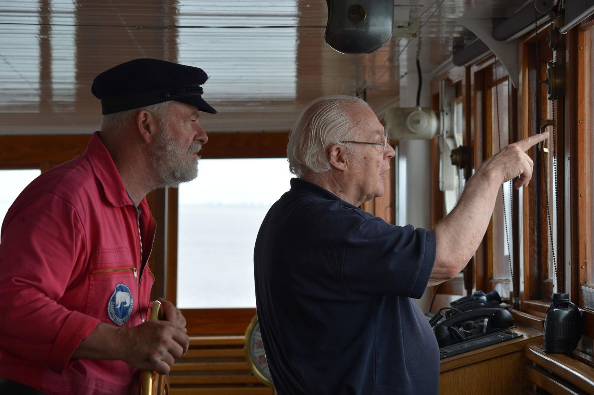

About us
Built by NyotaCore, for the people who keep the world moving
Nyovara exists to make maritime workforce management simpler and seafarer welfare visible.
Our vision
To become an integrated maritime workforce technology platform that simplifies crew administration, strengthens seafarer welfare and improves operational visibility across maritime organisations.
Why we built Nyovara
Crewing teams still juggle spreadsheets, email threads and legacy desktop systems to keep vessels manned and compliant. Seafarers chase paper copies of their own certificates. Welfare issues surface too late. NyotaCore Solutions & Services built Nyovara to give every party — shore, ship and seafarer — one trustworthy record and the right tools for their job.
What we believe
- Compliance should be calculated, not guessed
- Seafarer data belongs behind strong, audited access controls
- Software must work at sea, not just in the office
- Every seafarer deserves a voice that reaches someone who can help

14
Product objectives
4
User portals
60+
Management screens
100%
Records audited
Ready to modernise your crew operations?
Start a guided trial or book a walkthrough with the NyotaCore team.